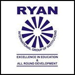

Academic Summary
|
|
|
|
|
| B.E
(Electronics & Communication) |
Netaji Subhas Institute of Technology |
2012 |
72% |
|
| Class XII |
Delhi Public School, R K Puram |
2007 |
83% |
90.33% in PCM |
| Class X |
Ryan International School, Delhi |
2005 |
91.4% |
1st Rank in Class |
 Netaji Subhas Institute of Technology is a leading institution of higher technical education in India, previously affiliated to University of Delhi. It is one of India's most reputed institutions in the domain of technical education; NSIT has carved a niche for itself - both nationally and internationally - for excellence in education and research.
Netaji Subhas Institute of Technology is a leading institution of higher technical education in India, previously affiliated to University of Delhi. It is one of India's most reputed institutions in the domain of technical education; NSIT has carved a niche for itself - both nationally and internationally - for excellence in education and research.
In 2018, the college was given state university status, thus changing its name to Netaji Subhas University of Technology (NSUT).
Delhi Public School R.K. Puram is one of the most prestigious schools in India and regularly features at the top of various rankings for academic excellence.
Founded as a Public School in 1972 in New Delhi, it is a private institution run by the Delhi Public School Society. Delhi Public School, R.K. Puram is affiliated to the Central Board of Secondary Education (CBSE).
Ryan International Schools are a group of private educational institutions in India founded in 1976 by Dr. Augustine Francis Pinto.